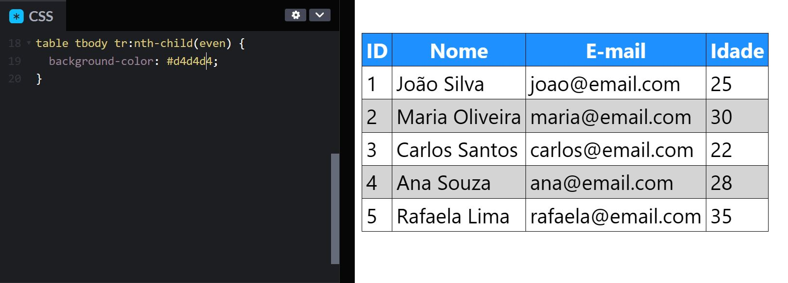

Como criar uma tabela em HTML e CSS com linhas com cores alternadas?
Para criar uma tabela em HTML e CSS com linhas com cores alternadas,
é possível utilizar a pseudo-classe :nth-child() do CSS
para selecionar elementos de forma alternada, sejam eles em ordem
par ou ímpar.
Diante disso, observe o exemplo abaixo:
Código CSS utilizado:
table {
border-collapse: collapse;
font-family: system-ui;
font-size: 1.5rem;
}
table thead {
color: white;
background-color: dodgerblue;
}
table :is(td,th) {
border: 1px solid black;
padding: .2rem .3rem;
}
table tbody tr:nth-child(even) {
background-color: #d4d4d4;
}